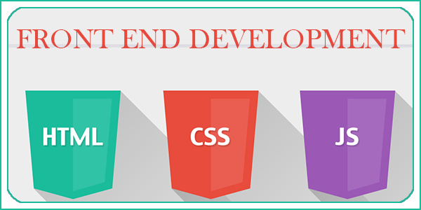

This is Task 3, received from Cognifyz Technologies. The objective is to design a webpage that adjusts its layout appropriately for different screen sizes, thereby enhancing user experience across various devices. You are required to use media queries in a separate CSS file (styles.css) to make the webpage responsive. Ensure that the layout and element sizes are adjusted for different screen sizes, prioritizing readability and usability.
